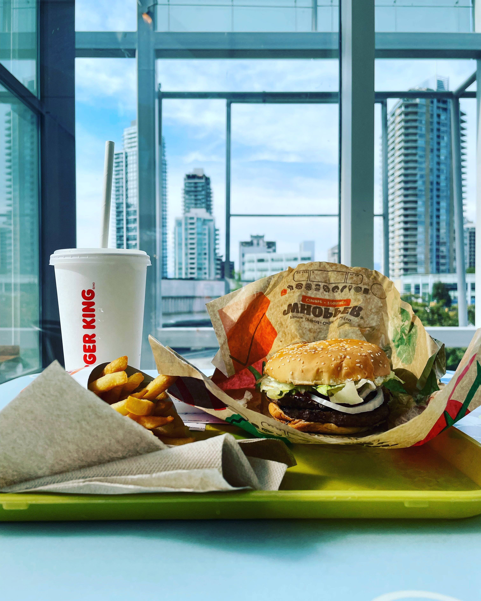
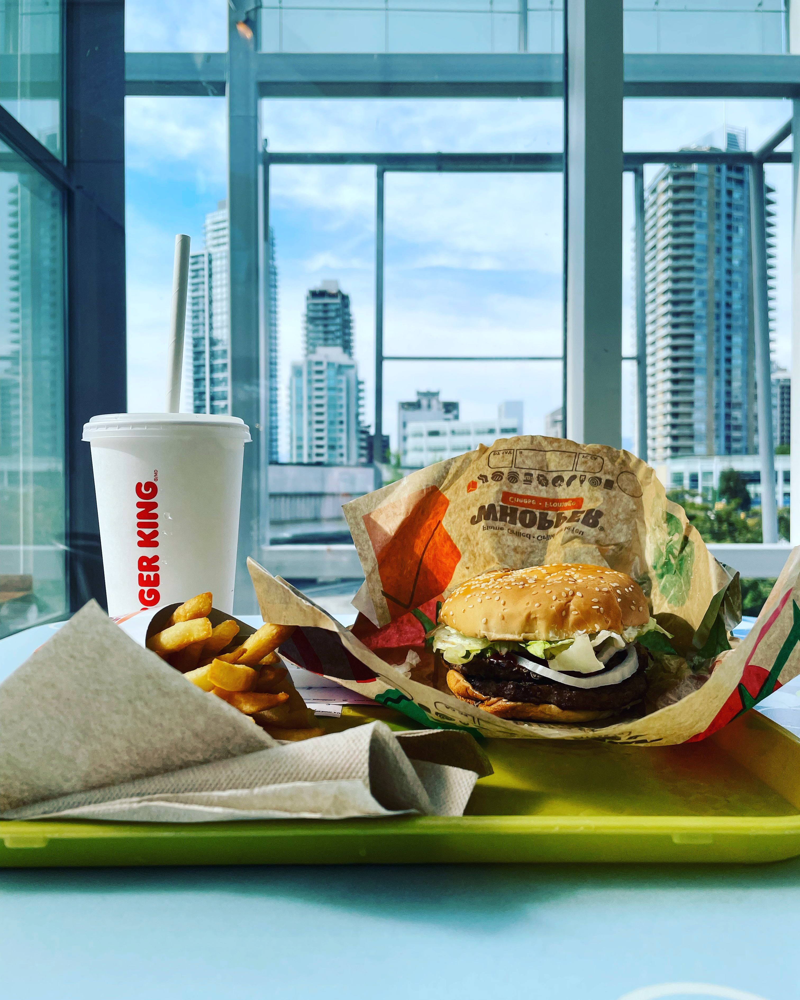

Hobbies
Club Activity
Achievements
- 茨城県総合体育大会 (2018) 八種競技 第6位
- 茨城県陸上競技選手権大会 (2018) 十種競技 第6位
- U20 日本陸上競技選手権大会 (2020) 十種競技 第14位
Comment
小学校から大学まで陸上競技をやっていました。競技は混成です。十種目もあるので、陸上競技の中でもかなり過酷と言われており、実際すごく大変です。

*U20 400m競走直前の選手紹介、競技会棒高跳び、競技会やり投げ
My Cats
Name
- Kinako
- Azuki
- Warabi
Comment
日本にいる僕の家族を紹介します。きなこ、あずき、わらびです。きなことあずきは兄妹で、赤ちゃんの頃に祖母の家からやってきました。
わらびは一番年下で僕が大学生のころに先輩から引き取った子です。みんな性格はバラバラだけど、すごくかわいい大切な家族です。 3匹とも日本のお菓子から命名しているという小ネタがあります。

*右からきなこ、あずき、わらび、わらびちゃんとトトロ
Travel
旅行は結構好きです。(最近時間なくて行けてないけど、、、)
普段は体験できないような環境に身を投じるのは楽しいものです。面白かった旅先の写真を貼っておきます。


 

*左上から、横浜、スカイツリー、歌舞伎町、尾道、瀬戸内海、太平洋上空、バンクーバー1,2,3、セントラルパーク、ダウンタウン、メトロポリス